    <html lang="en">
<head>
    <meta charset="UTF-8">
    <meta http-equiv="X-UA-Compatible" content="IE=edge">
    <meta name="viewport" content="width=device-width, initial-scale=1.0">
    <title fa>Higher Engineering soltion | Home</title>
    <link rel="shortcut icon" href="favicon.png" type="image/x-icon">
    <meta name="description" content="Video answers with step-by-step explanations by expert educators for all Higher Engineering Mathematics">
    <link rel="stylesheet" href="style.css">
    <link href="https://cdn.jsdelivr.net/npm/bootstrap@5.2.2/dist/css/bootstrap.min.css" rel="stylesheet" integrity="sha384-Zenh87qX5JnK2Jl0vWa8Ck2rdkQ2Bzep5IDxbcnCeuOxjzrPF/et3URy9Bv1WTRi" crossorigin="anonymous">
    <script src="https://cdn.jsdelivr.net/npm/bootstrap@5.2.2/dist/js/bootstrap.bundle.min.js" integrity="sha384-OERcA2EqjJCMA+/3y+gxIOqMEjwtxJY7qPCqsdltbNJuaOe923+mo//f6V8Qbsw3" crossorigin="anonymous"></script>  
    
</head>
<script src='https://cdnjs.cloudflare.com/ajax/libs/mathjax/2.7.4/MathJax.js?config=default'></script>
<body>
    

  <nav class="navbar navbar-expand-xxl navbar-dark bg-dark" aria-label="Seventh navbar example">
    <div class="container-fluid">
      <a class="navbar-brand" href="home.html">Home</a>
      <button class="navbar-toggler" type="button" data-bs-toggle="collapse" data-bs-target="#navbarsExampleXxl" aria-controls="navbarsExampleXxl" aria-expanded="false" aria-label="Toggle navigation">
        <span class="navbar-toggler-icon"></span>
      </button>

      <div class="collapse navbar-collapse" id="navbarsExampleXxl">
        <ul class="navbar-nav me-auto mb-2 mb-xl-0">
          <ul class="navbar-nav me-auto mb-2 mb-lg-0">

            <!-- ist year  -->
            <li class="nav-item dropdown">
              <a class="nav-link dropdown-toggle" href="#" role="button" data-bs-toggle="dropdown" aria-expanded="false">
                First year
              </a>
              <ul class="dropdown-menu">
                <li><a class="dropdown-item" href="Semester1.html">Semester 1</a></li>
                <li><hr class="dropdown-divider"></li>
                <li><a class="dropdown-item" href="Semester2.html">Semester 2</a></li>
             
                
              </ul>
            </li> 
            
            <!-- 2nd year  -->
            <li class="nav-item dropdown">
              <a class="nav-link dropdown-toggle" href="#" role="button" data-bs-toggle="dropdown" aria-expanded="false">
                Second Year
              </a>
              <ul class="dropdown-menu">
                <li><a class="dropdown-item" href="Semester3.html">Semester 3</a></li>
                
                <li><hr class="dropdown-divider"></li>
                <li><a class="dropdown-item" href="Semester4.html">Semester 4 </a></li>
              </ul>
            </li> 
             
            <!-- 3rd   yeAR  -->
            <li class="nav-item dropdown">
              <a class="nav-link dropdown-toggle" href="#" role="button" data-bs-toggle="dropdown" aria-expanded="false">
                Third Year
              </a>
              <ul class="dropdown-menu">
                <li><a class="dropdown-item" href="Semester5.html">Semester 5</a></li>
                <li><hr class="dropdown-divider"></li>
                <li><a class="dropdown-item" href="Semester6.html">Semester 6</a></li>
                
                
              </ul>
            </li>

            <!-- 4TH YEAR 
             -->

             <li class="nav-item dropdown">
              <a class="nav-link dropdown-toggle" href="#" role="button" data-bs-toggle="dropdown" aria-expanded="false">
                Fourth Year
              </a>
              <ul class="dropdown-menu">
                <li><a class="dropdown-item" href="Semester7.html">Semester 7</a></li>
               
                <li><hr class="dropdown-divider"></li>
                <li><a class="dropdown-item" href="Semester8.html">Semester 8</a></li>
              </ul>
            </li>


             <!-- Galgotias qb  -->
             <li class="nav-item dropdown">
              <a class="nav-link dropdown-toggle" href="#" role="button" data-bs-toggle="dropdown" aria-expanded="false">
                Galgotias Question Bank & Solution
              </a>
              <ul class="dropdown-menu">
                <li><a class="dropdown-item" href="Semiconductor.html">Semi conductor</a></li>
               
                <li><hr class="dropdown-divider"></li>
                <li><a class="dropdown-item" href="Mathematics.html">Mathematics</a></li>
                <li><hr class="dropdown-divider"></li>
                <li><a class="dropdown-item" href="Graphics.html">Graphics</a></li>
                <li><hr class="dropdown-divider"></li>
                <li><a class="dropdown-item" href="Biology.html">Biology</a></li>
                <li><hr class="dropdown-divider"></li>
                <li><a class="dropdown-item" href="ai.html">AI ML</a></li>
                <li><hr class="dropdown-divider"></li>
                <li><a class="dropdown-item" href="Cyber.html">Cyber Security</a></li>
                <li><hr class="dropdown-divider"></li>
                <li><a class="dropdown-item" href="Data.html">Data Science</a></li>
                 </ul>
            </li>

<!--             
             -->
            <li class="nav-item">
              
              <a class="nav-link" href="https://rzp.io/l/bRb6XIN">Donate</a>
            </li>
           
            <li class="nav-item">
              
              <a class="nav-link" href="Contact.html">Contact Us</a>
            </li>
            <li class="nav-item">
              <a class="nav-link" href="Courses.html">Courses</a>
            </li>
            <li class="nav-item">
              <a class="nav-link" href="CEO.HTML">About</a>
            </li>
            <li class="nav-item">
              <a class="nav-link" href="internship.html">Internship </a>
            </li> 

          </ul>
          
     
      </div> <div class="text-end">
        <a href="sig.html"> <button type="button" class="btn btn-outline-light me-2">Login</button></a>
         <button type="button" class="btn btn-warning">Sign-up</button>
       </div>
      
    </div>
   
    
  </nav>

  </div>
</main>


  
  <header>
    <h1 class="animate" style="font-family:Georgia ">Higher Engineering Solutions</h1>
</header>
<style>

  .x{
   
    margin-left:430px;
  }

</style>


    <main>
        <div style="text-align: center;">
            <!--  -->
        <h1 font-family="Georgia" >Semester 1
            </h1>
             
            <br><br><br><br><br>

            <!-- table of sem1  -->
            <table width="100%">
              <tr><td>
                <caption style="text-align: center;"><h2>Subjects</h2> </caption>
                  <table width="90%" align="center"  border="1">
                   
                      
                          
                          <tr height="20%">
                          <td width="30%" align="center"> <a href="#multi"><h3> Multivariable calculus</h3></a></td>
                          <td width="30%" align="center"> <a href="#bio"><h3> Biology for Engineers</h3></a></td>
                          <td width="30%" align="center"><a href="#bee"> <h3> Basic Electrical and Electronics Engineering  </h3></a></td>
                          </tr>
                          <tr>
                          <td width="30%" align="center"> <a href="#ai"><h3> AI Fundamentals</h3></a></td>
                          <td width="30%" align="center"><a href="#semi"> <h3> Semiconductor</h3></a></td>
                          <td width="30%" align="center"> <a href="#c"><h3> Programming for Problem solving C</h3></a></td>
                          
              
                      </tr>
                  </table>
              </td></tr>
          </table>
            
              

    


    </main>
    <br>
    
    
  
    <div id="multi">
    <center><h2> <u>Multivariable calculus</u> </h2></center>
    
  </div><br>
  <br>
  <br>
   <!-- question images added by aadi -->
  <br>
  <div class="bank">
    
    <p>1.Find the nth term of the sequence 
      1, -4, 9, -16, 25, …</p>
    <p>2.Solve: lim <sub> n->&#8734 </sub> (-1/n)
    </p>

    <p>3.Solve: 
      lim <sub> n->&#8734 </sub> (4-7n^6/n^6+3)
    <p>4.Solve: 
      lim <sub> n->&#8734 </sub>(n-11/n) <sup>6 </sup>
         
    <p>5.Show that series 1+ 1/27+ 1/81
      + ⋯ is convergent and 
      find its sum.</p>
      <p>6.What is the value of 1+1/4+1/16+1/64+...</p>
      
       
       <p>7.Show that the series ∑<sup>&#8734</sup><sub>n=0</sub> ( -n/2n+5)
       </p>
       <p>8.Show that the series ∑<sup>&#8734</sup><sub>n=0</sub> 2<sup>n</sup>+5/3 <sup>n</sup>
        <sup></sup> is convergent and its sum 
        is 10.5.</p>
  <p>9.
    Show that the series ∑ <sup>&#8734</sup><sub>n=1</sub>(2n)!/(n!)<sup>2</sup> is not convergent.
  </p>
  <p>10.Explain that the series ∑ <sup>&#8734</sup><sub>n=1</sub> 
    n <sup>2</sup>/(2)<sup>
      n
    </sup>
 is convergent.
 
    <p>11.Explain that the series ∑<sup>&#8734</sup><sub>n=0</sub> (1/1+n) <sup>n</sup> is convergent.</p>
    <p>12.Show that the power series 1 - 1/2(x - 2) + (x - 2)<sup>2
      </sup> -1/8(x - 2)<sup>
        3
      </sup> + ⋯ converges to
      2/x
       for 0< x < 4. </p>
    <p>13.Show that the power series ∑<sup>&#8734</sup>n=1<sub></sub>
    (-1)<sup>n+1</sup>x<sup>n</sup>/n
    converges for -1< x ≤ 1.
  </p>
  14.Show that the power series ∑<sup>&#8734</sup>n=1<sub></sub>
  (-1)<sup>n-1</sup> x <sup>2n-1</sup>/2n-1 converges for −1 ≤ 𝑥𝑥 ≤ 1.
  </p>
  

<p>
 15. Determine the interval and radius of convergence for the
power series ∑<sup>&#8734</sup>n=0</sub>(n/
3<sup>n+1</sup>)x <sup>x</sup>


</p>
<p>16.
  Find the radius of the convergence of the power series
  ∑<sup>&#8734</sup>n=0<sub></sub>
  (x-3)<sup>n</sup>/(n!)3n.
</p>
   <p>17.Find the radius of the convergence of the power series
    ∑<sup>&#8734</sup>n=0<sub></sub>(10<sup>
      n
    </sup>/n!)(x-1).</p>
<p>18.Find the Fourier sine and cosine series of the function
  𝑓(𝑥) = 𝑘 in the interval 0 < 𝑥 < 5.</p>
<p>19.Find the Fourier sine and cosine series of the function
  𝑓(𝑥) = 𝑥 in the interval 0 < 𝑥 < 2.</p>
<p>20.Find the Fourier sine and cosine series of the
  function 𝑓(𝑥) = { x,0 < x < 2 , 
    <div class="x">
       2 ≤ 𝑥 < 4 
    </div>
  </p>
   <p> 21.Solve: lim n-->&#8734(1-1/n)<sup>2n</sup>.</p>
                    
<p>22.Find the radius of the convergence of the power series ∑<sup>&#8734

</sup><sub>
  n=0

</sub> (x-3)<sup>n</sup>/(n!)3<sup>n</sup>.</p>
<p>23.Show that the
  p
  -series
  ∑<sup>&#8734</sup><sub>n-1</sub> (1/n<sup>p</sup>)[p a real constant]
  converges if p>1, and diverges if p≤1.
</p>
<p>22.Apply Rolle’s theorem to find the value of
  𝑐 for the
  function
  𝑓(𝑥)=𝑥<sup>3</sup>−3𝑥<sup>2</sup> + 2
  𝑥 + 2 in the
  interval
  [
  0
  ,
  1
  ]
  .</p>
<p>23.Apply Rolle’s theorem to find the value of
  𝑐 for the
  function
  𝑓(𝑥)=(1/3)𝑥<sup>3</sup> −3𝑥 in the interval[−3,
  3
  ]
  .</p>
<p>24.Apply Rolle’s theorem to find the value of
  𝑐 for the
  function
  𝑓
  (
  𝑥
  )
  = sin
  𝑥 in the interval
  [
  0
  ,
  𝜋
  /
  2
  ]
  .</p>

<p>25.Apply Mean value theorem to find the value of
  𝑐 for the
  function
  𝑓
  (
  𝑥
  )
  =
  𝑥<sup>3</sup>−x<sup>2</sup>
 −
  𝑥
  +
  1 in the interval
  [
  0
  ,
  2
  ]
  .</p>

<p>26.Apply Mean value theorem to find the value of
  𝑐 for the
  function
  𝑓
  (
  𝑥
  )
  =
  𝑥<sup>
    2
  </sup>
  +
  1 in the interval
  [
  −
  2
  ,
  2
  ]
  .</p>
  <p>2.Apply Mean value theorem to find the value of
    𝑐 for the
    function
    𝑓
    (
    𝑥
    )
    =
    |
    𝑥
    | in the interval
    [
    −
    1
    ,
    1
    ]
    .</p>
    <p>28.Compute: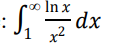 </p>
<p>29.Compute 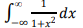</p>
<p>30.Compute 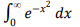</p>
<p>31.Compute 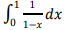</p>
<p>32.Compute 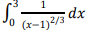</p>
<p>33.Compute 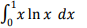</p>
<p>34.Compute 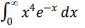</p>
<p>35.Compute 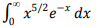</p>
<p>36.Compute 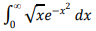</p>
<p>37.Compute 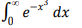</p>
<p>38.Compute 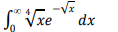</p>
<p>39.Compute 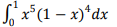</p>
<p>40.Compute 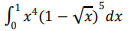</p>
<p>41.Compute 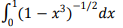</p>
<p>42.Find the evolutes of the curve
  𝑥<sup>2</sup>
  =
  4𝑎y
  .<p>
  <p>43.Find the evolutes of the curve
    𝑥y
    =
    1
    .</p>
</p>44.Find the evolutes of the curve
𝑥<sup>2/3</sup>
+
𝑦 <sup>2/3</sup>
=
𝑎<sup>2/3</sup>
.</p>
<p>45.Find the domain and range of the function
  𝑓
  (
  𝑥
  ,
  𝑦
  )
  = 2x/y-x<sup>2</sup></p>
<p>46.Find the domain and range of the function𝑓
  (
  𝑥
  ,
  𝑦
  ,
  𝑧
  )
  =
  xylnz. </p>
<p>47.Plot the level curves
  𝑓
  (
  𝑥
  ,
  𝑦
  )
  = 51, and
  𝑓
  (
  𝑥
  ,
  𝑦
  )
  =
  75 in the domain of the function
  𝑓
  (
  𝑥
  ,
  𝑦
  )
  = 100
  −
  𝑥
  2
  −
  𝑦
  2 in the plane.</p>
<p>48.Show that the limit does not exist of the function: 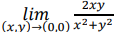</p>
<p>49.Show that the limit does not exist of the function: 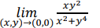</p>
<p>50.Show that the limit does not exist of the function: 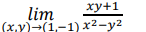</p>
<p>51.Find the limit:
  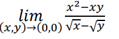
</p>
<p>52.At what points (x, 
  y) in the plane is the function 
  continuous: </p>
<p>53.Show that the function is continuous at every point 
  except the origin: 
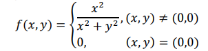</p>
<p>54.Show that the function is continuous at every point 
  except the origin: 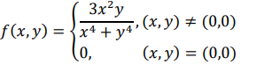</p>
<p>55.Find the partial derivative of the function with respect to 
  each variable: f(x, y)=2x<sup>2</sup>
  -3y
  -
  4</p>
  <p>56.Find the partial derivative of the function with respect to 
    each variable: f(x,y)=(x+y)(xy
    -1)</p>
  <p>57.Find the partial derivative of the function with respect to 
    each variable: f(x, y)=tan-1(y/x)</p>
  <p>58.Find the partial derivative of the function with respect to 
    each variable: f(x, y)=tan<sup>-1</sup>(y/x)</p>
  <p>59.Find all the second
    -order partial derivatives of the 
    function: f(x, y)=(x+y+xy)</p>
  <p>60.Find all the second
    -order partial derivatives of the 
    function z=x<sup>2</sup> tan(xy)</p>
  <p>61.ind the total differential of the function at the point (1,1): f(x,y)=x<sup>3</sup>y<sup>4</sup>
  <p>62.Find the total differential of the function at the point (1,0,0): f(x,y,z)=√(𝑥<sup>2</sup> + 𝑦<sup>2</sup> + 𝑧<sup>

  2</sup>)</p>
  <p>63.Find Taylor series upto 2nd degree of 
    (
    𝑥, 
    𝑦) = 𝑥e<sub>y</sub>
 at the 
    point (0, 0)
    </p>
  <p>64.Find Taylor series upto 2nd degree of 
    (
    𝑥, 
    𝑦) = 
    𝑥
    <sup>2</sup>
    𝑦 + 
    𝑦<sup>3</sup> at 
    the point (1, 3)
    .
  </p>
  <p>65.Find Taylor series upto 2nd degree of 
    (
    𝑥, 
    𝑦) = tan<sup>-1</sup>(y/x) 
    at the point (1, 1). </p>
  <p>66.Find the critical points of the function 
    (x,y)
    =xy-x<sup>2</sup>-y<sup>2</sup>
    -2x-2y+
     4 and use second derivative test to classify 
    each point as one where a saddle, local minimum or 
    local maximum occurs.</p>
  <p>67.Find the critical points of the function 
    (
    𝑥, 
    𝑦) = 
    -
    3
    𝑥<sup>2</sup> + 3
    𝑦 <sup>2</sup> 
    + 6
    𝑥y - 2y<sup>3</sup> and use second derivative test to classify 
    each point as one where a saddle, local minimum or 
    local maximum occurs.</p>
  <p>68.Find the critical points of the function 
    (
    𝑥, 
    𝑦) = 
    𝑥<sup>3</sup> 
    -
    𝑦<sup>3</sup> 
    -
    2
    𝑥y + 6 and use second derivative test to classify each 
    point as one where a saddle, local minimum or local 
    maximum occurs.</p>
  <p>69.Find the extreme values of the function 
    (
    𝑥, 
    𝑦) = 
    𝑥<sup>2</sup> + 2
    𝑦<sup>2</sup> 
    on the circle 
    x <sup>2</sup> + 
  𝑦 <sup>2</sup> =1 using Lagrange Multiplier 
    method.</p>
  <p>70.Find the extreme values of the function 
    (
    𝑥, 
    𝑦) = 
    𝑥 + 
    𝑦 + 
    2
    𝑧 on the surface 
    𝑥<sup>2</sup> 
    +
    𝑦<sup>2</sup> + 
    𝑧<sup>2</sup> = 3 using Lagrange 
    Multiplier method.</p>
  <p>71.A rectangular box, open at the top, is to have a volume 
    of 32 cc. Find the dimensions of the box requiring least 
    material for its constructions.</p>
  <p>72.Compute: 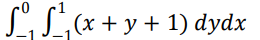</p>
  <p>73.Compute the double integral over the region 
    R
    :
    0
    ≤
    𝑥
    ≤
    1, 0 ≤ 𝑦 ≤
    2; 
    ∬ (6
    𝑦<sup>2</sup>
    
    −
    2
    𝑥
    )𝑑A</p>
  <p>74.Calculate 
    ∬
    𝑓
    (
    𝑥
    ,
    𝑦
    )𝑑A
    for 
    𝑓
    (
    𝑥
    ,
    𝑦
    )
    = 100
    −
    6
    𝑥<sup>2</sup>
    
    𝑦 and 
    𝑅: 0 ≤ 𝑥 ≤ 2, 
    −
    1 ≤ 𝑦 ≤
    1.</p>
  <p>75.Compute: 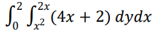</p>
  <p>76.Compute: 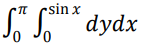</p>
  <p>77.Compute: 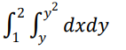</p>
  <p>78.Compute: 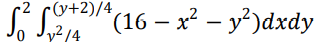</p>
  <p>79.</p>
  <p>80.</p>
  <p></p>
  <p></p>
  <p></p>
  <p></p>
  <p></p>
  <p></p>
  <p></p>
  <p></p>
  <p></p>
  <p></p>
  <p></p>
  <p></p>
  <p></p>
  <p></p>
  <p></p>
  <p></p>
  <p></p>
  <p></p>
  <p></p>
  <p></p>
  <p></p>
  <p></p>
  <p></p>
  <p></p>
  <p></p>
  <p></p>
  <p></p> 


  </div>
<br>
<br>

<br>
<br>
<BR><br><br><br><br><br><br><br><br>

<br><br><br><br><br><br><br>

  <br><br><br><br>

<br><br><br><b><b>
  
<br><br><br>
</BR><br><br><br><br><br><br><br><br><br><br><br>
<br><br><br>
</BR><br><br><br><br><br><br><br><br><br><br><br>
<br><br><br>
</BR><br><br><br><br><br><br><br><br><br><br><br>
<br>
<br>
<br>
<br>
<br>
<br>
<br>
<br>
<br>

<br>
<br>
<br>
<br>
<br>
<br>

<br>
<br><br>
<br>
<br>
<br>
<!-- question of bio -->
<div id="bio">
  <center><h2> <u>Biology for Engineers</u> </h2></center>
  </div>
  <br>

  <!-- question of Basic Electrical and Electronics Engineering  -->
<div id="bee">
  <center><h2> <u>Basic Electrical and Electronics Engineering  </u> </h2></center>
  </div>
  <br>
  
  
  <!-- question of  AI Fundamentals-->
<div id="ai">
  <center><h2> <u>AI Fundamentals  </u> </h2></center>
  </div>
  <h2 align="center"> 2 Marks </h2>
  <p> <h3>1. What is what if Analysis?</h3> <br>
   <h4> What-If Analysis is the process of changing the values in cells to see how those 
    changes will affect the outcome of formulas on the worksheet. Three kinds of What￾If Analysis tools come with Excel: Scenarios, Goal Seek, and Data Tables. 
    Scenarios and Data tables take sets of input values and determine possible results.</h4><br>
   <h3> 2. List different types of What if Analysis.</h3><br>
    <h4>Three kinds of What-If Analysis tools come with Excel: Scenarios, Goal Seek, and 
    Data Tables. Scenarios and Data tables take sets of input values and determine 
    possible results. A Data Table works with only one or two variables, but it can 
    accept many different values for those variables.</h4><br>
    <h3> 3. Do we always need a formulae cell to do what-if analysis?
      <h3>4. What is the advantage of sorting?</h3><br>
      <h4>The quick sort is regarded as the best sorting algorithm. This is because of its 
    significant advantage in terms of efficiency because it is able to deal well with a huge 
    list of items. Because it sorts in place, no additional storage is required as well</h4><br>
    <h3>5. What is the advantage of regression analysis?</h3><br>
    <h4>The importance of regression analysis is that it is all about data: data means 
    numbers and figures that actually define your business. The advantages of 
    regression analysis is that it can allow you to essentially crunch the numbers to 
    help you make better decisions for your business currently and into the future.</h4><br>
    <h3>6. What is sorting?</h3><br>
    <h4>Sorting is any process of arranging items systematically, and has two common, yet 
    distinct meanings: ordering: arranging items in a sequence ordered by some 
    criterion; categorizing: grouping items with similar properties.</h4><br>
    <h3>7. What is the filter?</h3><br>
    <h4>Particle filtering is a sampling method that starts with a population of particles, 
    each of which assigns a value to no variables, and has a weight of 1. At each step 
    it can. select a variable that has not been sampled or summed out and is not 
    observed.</h4><br>
    <h3>8. What is machine learning?</h3><br>
    <h4>Machine learning is a method of data analysis that automates analytical model 
    building. It is a branch of artificial intelligence based on the idea that systems can 
    learn from data, identify patterns and make decisions with minimal human 
    intervention.</h4><br>
    <h3>9. Define statistics</h3><br>
    <h4>Statistics is a collection of tools that you can use to get answers to important 
    questions about data. You can use descriptive statistical methods to transform raw 
    observations into information that you can understand and share. ... Statistics is 
    generally considered a prerequisite to the field of applied machine learning.</h4><br>
    <h3> 10. Where is unsupervised learning used ?</h3><br>
    <h4>Unsupervised learning is commonly 
    used for finding meaningful patterns and groupings inherent in data, extracting 
    generative features, and exploratory purposes.</h4><br>
    <h2 align="center"> 5 Marks </h2>
    <h3>1. Explain correlation with the help of an example.</h3><br>
    <h4>Correlation means association - more precisely it is a measure of the extent to 
    which two variables are related. ... Therefore, when one variable increases as the 
    other variable increases, or one variable decreases while the other decreases. An 
    example of positive correlation would be height and weight.</h4><br>
    <h3>2. Explain regression analysis.</h3><br>
    <h4>Regression analysis is a reliable method of identifying which variables have 
    impact on a topic of interest. The process of performing a regression allows you to 
    confidently determine which factors matter most, which factors can be ignored, 
    and how these factors influence each other. 
    a regression analysis is done for one of two purposes: In order to predict the value 
    of the dependent variable for individuals for whom some information concerning 
    the explanatory variables is available, or in order to estimate the effect of some 
    explanatory variable on the dependent variable. 
    Example: we can say that age and height can be described using a linear regression 
    model. Since a person's height increases as its age increases, they have a linear 
    relationship.</h4><br>
    <h3>3. Discuss the role of data filter.</h3><br>
    <h4> Data filtering is the process of choosing a smaller part of your data set and using 
    that subset for viewing or analysis. Filtering is generally (but not always) temporary 
    – the complete data set is kept, but only part of it is used for the calculation. ... 
    Calculate results for particular groups of interest.
    it is done to make it easier to focus on specific information in a large dataset or 
    table of data. Filtering does not remove or modify data it changes which rows or 
    columns appear in the active Excel worksheet.</h4><br>
    <h3>4. What is the difference between filter and sorting?</h3><br>
    <table width="90%" border="0" align="center">
      <tr>
        <td width="40%" border="1"><h4>Sorting: To arrange your data in a particular order. E.g. Arranging a list on the 
    alphabetical order, arranging your data on in increasing or decreasing order of 
    numeric values.</h4></td>
    <td width="10%"></td>
    <td width="40%" border="1"> <h4>Filtering: To filter out some data based on a condition. E.g. You may like to see list of 
    students who have scored more than 80 percent from a list of all the students. In 
    filtering some data rows gets hidden and some are visible which satisfies a condition.</h4></td>
  </tr>
  </table><br>
    <h3>5. Name 5 programming languages most commonly used for AI.</h3><br>
    <h4>Top 5 AI programming languages:
    LISP.= LISP, an acronym for list processing, is a programming language that was 
    designed for easy manipulation of data strings. Developed in 1959 by John 
    McCarthy, it is a commonly used language for artificial intelligence (AI) 
    programming.
    Python. = Python is an interpreted, object-oriented, high-level programming 
    language with dynamic semantics. ... Python's simple, easy to learn syntax 
    emphasizes readability and therefore reduces the cost of program maintenance. 
    Python supports modules and packages, which encourages program modularity 
    and code reuse.
    C++ = C++ is an object-oriented programming (OOP) language that is viewed by 
    many as the best language for creating large-scale applications. C++ is a superset 
    of the C language. A related programming language, Java, is based on C++ but 
    optimized for the distribution of program objects in a network such as the Internet.
    Java. = Java is an object-oriented programming language that produces software 
    for multiple platforms. When a programmer writes a Java application, the compiled 
    code (known as bytecode) runs on most operating systems (OS), including 
    Windows, Linux and Mac OS.
    Prolog.= Prolog is a logic programming language associated with artificial 
    intelligence and computational linguistics. ... The language has been used for 
    theorem proving, expert systems, term rewriting, type systems, and automated 
    planning, as well as its original intended field of use, natural language processing.</h4><br>
    <h3>6. Discuss descriptive statistics.</h3><br>
    <h4> Descriptive statistics summarizes or describes the characteristics of a data set. 
    Descriptive statistics consists of two basic categories of measures: measures of 
    central tendency and measures of variability (or spread). Measures of central 
    tendency describe the center of a data set. 
    For example, it would not be useful to know that all of the participants in our 
    example wore blue shoes. However, it would be useful to know how spread out 
    their anxiety ratings were.
    Descriptive statistics can be useful for two purposes: 1) to provide basic 
    information about variables in a dataset and 2) to highlight potential relationships 
    between variables. The three most common descriptive statistics can be displayed 
    graphically or pictorially and are measures of: Graphical/Pictorial Methods.</h4><br>
    <h3>7. Discuss inferential statistics.</h3><br>
    <h4> Inferential statistics is one of the two main branches of statistics. Inferential 
    statistics use a random sample of data taken from a population to describe and 
    make inferences about the population. ... You can use the information from the 
    sample to make generalizations about the diameters of all of the nails. 
    The goal of inferential statistics is to discover some property or general pattern 
    about a large group by studying a smaller group of people in the hopes that the 
    results will generalize to the larger group. 
    Since in most cases you don't know the real population parameter, you can use 
    inferential statistics to estimate these parameters in a way that takes sampling error 
    into account. There are two important types of estimates you can make about the 
    population: point estimates and interval estimates.</h4><br>
    <h3>8. What are Pivot Tables? How it helps in data interpretation and processing.</h3><br>
    <h4> A PivotTable is an interactive way to quickly summarize large amounts of data. 
    You can use a PivotTable to analyze numerical data in detail, and answer 
    unanticipated questions about your data. A PivotTable is especially designed for: 
    Querying large amounts of data in many user-friendly ways.
    Pivot tables area technique in data processing. They arrange and rearrange (or 
    "pivot") statistics in order to draw attention to useful information. This leads to 
    finding figures and facts quickly making them integral to data analysis. This 
    ultimately leads to helping businesses or individuals make educated decisions.</h4><br>
    <h3>9. How Machine learning helps in recommending your favourite movie/web series at 
    Online Media or suggesting your products online.</h3><br>
    <h3>10. Discuss supervised learning with the help of an example.</h3><br>
    <h4> One practical example of supervised learning problems is predicting house prices. 
    ... By leveraging data coming from thousands of houses, their features and prices, 
    we can now train a supervised machine learning model to predict a new house's 
    price based on the examples observed by the model.
    Supervised learning, also known as supervised machine learning, is a subcategory 
    of machine learning and artificial intelligence. It is defined by its use of labeled 
    datasets to train algorithms that to classify data or predict outcomes accurately.
    Some popular examples of supervised machine learning algorithms are: Linear 
    regression for regression problems. Random forest for classification and 
    regression problems. Support vector machines for classification problems.</h4><br>
    <h2 align="center"> 8 Marks </h2>
    <h3>1. What is the role of charts in data analysis? Explain with examples.</h3><br>
    <h4>Charts are often used to ease understanding of large quantities of data and the 
    relationships between parts of the data. Charts can usually be read more quickly 
    than the raw data. They are used in a wide variety of fields, and can be created by 
    hand (often on graph paper) or by computer using a charting application.
    • It makes the data more presentable and easy to understand. By looking at the 
    chart itself one can draw certain inferences or analysis.
    • It helps in summarizing a very large data in a very crisp and easy manner.
    • It helps in better comparison of data.</h4><br>
   <h3> 2. Name and discuss types of Machine Learning.</h3><br>
    <h4> These are three types of machine learning:
    • supervised learning:- Supervised learning is an approach to creating artificial 
    intelligence (AI), where a computer algorithm is trained on input data that has 
    been labeled for a particular output. ... In supervised learning, the aim is to make 
    sense of data within the context of a specific question. Some popular examples 
    of supervised machine learning algorithms are:
    1 Linear regression for regression problems.
    2 Random forest for classification and regression problems.
    3 Support vector machines for classification problems.
    • unsupervised learning:- Unsupervised learning refers to the use of artificial 
    intelligence (AI) algorithms to identify patterns in data sets containing data 
    points that are neither classified nor labeled. ... In other words, unsupervised 
    learning allows the system to identify patterns within data sets on its own. In 
    contrast to supervised learning, unsupervised learning methods are suitable 
    when the output variables (i.e the labels) are not provided. ... Some examples of 
    unsupervised learning algorithms include K-Means Clustering, Principal 
    Component Analysis and Hierarchical Clustering.
    • reinforcement learning:- Reinforcement learning (RL) is an area of machine 
    learning concerned with how intelligent agents ought to take actions in an 
    environment in order to maximize the notion of cumulative reward. 
    Reinforcement learning is one of three basic machine learning paradigms, 
    alongside supervised learning and unsupervised learning.
    Some of the autonomous driving tasks where reinforcement learning could be 
    applied include trajectory optimization, motion planning, dynamic pathing, 
    controller optimization, and scenario-based learning policies for highways. For 
    example, parking can be achieved by learning automatic parking policies. Two 
    types of reinforcement learning are 1) Positive 2) Negative. Two widely used 
    learning model are 1) Markov Decision Process 2) Q learning. Reinforcement 
    Learning method works on interacting with the environment, whereas the 
    supervised learning method works on given sample data or example</h4><br>
    <h3>3. Discuss the various trending applications that are immensely influenced by 
    Machine Learning.</h3><br>
    <h4>One of the most common applications of Machine Learning is Automatic Friend 
    Tagging Suggestions in Facebook or any other social media platform. Facebook 
    uses face detection and Image recognition to automatically find the face of the 
    person which matches it's Database and hence suggests us to tag that person 
    based on. 
    Applications of Machine learning
    Image Recognition: Image recognition is one of the most common applications of 
    machine learning. ...
    Speech Recognition. ...
    Traffic prediction: ...
    Product recommendations: ...
    Self-driving cars: ...
    Email Spam and Malware Filtering: ...
    Virtual Personal Assistant: ...
    Online Fraud Detection:</h4><br>
    <h3>4. Discuss different types of machine learning with examples.</h3>
   <h3> 5. Describe what is the filter? Steps to use filters in excel. What is its purpose?</h3><br>
    <h4> The filter in excel helps display relevant data by eliminating the irrelevant entries 
    temporarily from the view. The data is filtered as per the given criteria. The purpose 
    of filtering is to focus on the crucial areas of a dataset.
    Steps :- • Select any cell within the range.
    • Select Data > Filter.
    • Select the column header arrow .
    • Select Text Filters or Number Filters, and then select a comparison, like 
    Between.
    • Enter the filter criteria and select OK.</h4><br>
    <h3>6. What is reinforcement machine learning? Explain with the help of an example. List </h3><br>
    <h4> 2 area of applications.
    Some of the autonomous driving tasks where reinforcement learning could be 
    applied include trajectory optimization, motion planning, dynamic pathing, 
    controller optimization, and scenario-based learning policies for highways. For 
    example, parking can be achieved by learning automatic parking policies.</h4><br>
    <h3>7. What are soring and filters? How sorting and filter are useful for AI?</h3><br>
    <h4> • Sorting :-AI's use in sorting started with systems in the 1970s to 1980s. These 
    systems were based on optical sensors and electronics that compared gray 
    values or colors. Based on the ratio between these colors, the electronic circuit 
    would make a rules-based decision whether to keep or eject the material.
    Sorting is important in programming for the same reason it is important in 
    everyday life. It is easier and faster to locate items in a sorted list than unsorted. 
    Sorting algorithms can be used in a program to sort an array for later searching 
    or writing out to an ordered file or report.
    • Filter :- Filtering is a useful way to see only the data that you want displayed. 
    You can use filters to display specific records in a form, report, query, or 
    datasheet, or to print only certain records from a report, table, or query. Artificial 
    Intelligence Examples
    Manufacturing robots.
    Self-driving cars.
    Smart assistants.
    Proactive healthcare management.
    Disease mapping.
    Automated financial investing.
    Virtual travel booking agent.
    Social media monitoring.  </h4><br> </p>
  <br>

   <!-- question of  Semiconductor-->
<div id="semi">
  <center><h2> <u> Semiconductor  </u> </h2></center>
  </div>
  <br>
   <!-- question of   Programming for Problem solving C-->
<div id="c">
  <center><h2> <u>  Programming for Problem solving C  </u> </h2></center>
  </div>
  <br>


  <!-- <footer></footer> -->
 

<div class="footer"></div>

<div class="color">
<div class="container">
  <footer class="py-5" style="color: white;">
    <div class="row">
      <div class="col-6 col-md-2 mb-3">
       
        <ul class="nav flex-column" >
          <li class="nav-item mb-2"><a href="home.html" class="nav-link p-0 text-muted">Home</a></li>
          <li class="nav-item mb-2"><a href="Semester1.html" class="nav-link p-0 text-muted">First Year</a></li>
          <li class="nav-item mb-2"><a href="Semester3.html" class="nav-link p-0 text-muted">Second Year</a></li>
          <li class="nav-item mb-2"><a href="Semester5.html" class="nav-link p-0 text-muted">Third Year</a></li>
          <li class="nav-item mb-2"><a href="Semester7.html" class="nav-link p-0 text-muted">Fourth Year</a></li>
        </ul>
      </div>

      <div class="col-6 col-md-2 mb-3">
        
        <ul class="nav flex-column">
          <li class="nav-item mb-2"><a href="Contact.html" class="nav-link p-0 text-muted">Contact us</a></li>
          <li class="nav-item mb-2"><a href="CEO.HTML" class="nav-link p-0 text-muted">About</a></li>
          <li class="nav-item mb-2"><a href="internship.html" class="nav-link p-0 text-muted">Intermship</a></li>
          <li class="nav-item mb-2"><a href="Courses.html" class="nav-link p-0 text-muted">Courses</a></li>
          <li class="nav-item mb-2"><a href="qb.html" class="nav-link p-0 text-muted">Question bank</a></li>
         <li class="nav-item mb-2"><a href="https://rzp.io/l/bRb6XIN" class="nav-link p-0 text-muted">Donate</a></li>
        </ul> 
      </div>

     

      <div class="col-md-5 offset-md-1 mb-3">
        <form>
          <h5>Subscribe to our newsletter</h5>
          <p>Monthly digest of what's new and exciting from us.</p>
          <div class="d-flex flex-column flex-sm-row w-100 gap-2">
            <label for="newsletter1" class="visually-hidden">Email address</label>
            <input id="newsletter1" type="text" class="form-control" placeholder="Email address">
            <button class="btn btn-primary" type="button">Subscribe</button>
          </div>
        </form>
      </div>
    </div>

    <div class="d-flex flex-column flex-sm-row justify-content-between py-4 my-4 border-top" >
      <p>&copy; 2022 Higher Engineering Solution, Inc. All rights reserved.</p>
     
    </div>
  </footer>

</body>

</html>
